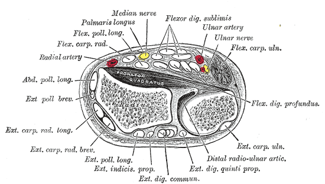

Condition
Ganglion Cyst
A benign fluid-filled bump on the wrist or hand. Harmless, often comes and goes, and only treated if it bothers you.

What is a ganglion cyst?
A ganglion cyst is a small sac of thick, clear fluid that arises from a joint or tendon sheath. They are the most common lumps in the hand and wrist. They are not cancer and they cannot become cancer. Many ganglions change in size from week to week and some go away on their own.
Common symptoms
- A firm, smooth bump on the wrist or hand, usually the size of a pea or grape
- Most common locations: the back of the wrist, the palm side of the wrist at the base of the thumb, the palm at the base of a finger, and just behind the fingernail
- Mild ache or pressure, especially with heavy gripping or pushing off the wrist
- Size that changes with activity
- Often no pain at all
Why does it happen?
Ganglion cysts form when joint fluid leaks out through a small opening in the joint capsule or tendon sheath and forms a one-way sac. The exact trigger is usually unknown. They are most common in adults between 20 and 40 but can occur at any age. A prior wrist injury or wear-and-tear of a nearby joint can contribute.
Treatment options
Non-surgical treatment
- Observation. If the cyst is not painful and not bothering you, no treatment is needed. Many resolve on their own.
- Aspiration. A needle is used to drain the fluid in the office. This works well for some cysts, especially those on the back of the wrist. About half come back after aspiration.
- Activity changes and splinting. A short period of wrist bracing can help if the cyst flares up with activity.
Surgical treatment
- Cyst excision. The cyst and its stalk are removed through a small incision. This has the lowest recurrence rate and is used when the cyst is painful, very large, or has come back after aspiration. Surgery is outpatient and recovery is straightforward.
What to expect at your visit
Dr. Barrera will examine the lump and often shine a light through it to confirm it is fluid-filled (a technique called transillumination). X-rays are sometimes ordered to look at the nearby joint; ultrasound or MRI is used in less typical cases. For most patients, the visit ends with reassurance that the lump is benign and a choice of whether to watch, aspirate, or remove it.
Call us if the lump is growing rapidly, is rock-hard and fixed in place, is red and warm, or comes with numbness or weakness in the hand. Those features are not typical for a ganglion and deserve a closer look.
Questions?
Call your office location for non-urgent questions:
- NYU Langone Laurelton · 646-501-4950
- NYU Orthopedic, Woodside · 929-429-3222
- NYU Orthopedic, Richmond Hill · 718-206-6923
- Jamaica Hospital Ambulatory Care Center (ACC) · 718-301-0720
See our office contact information for addresses and fax numbers.